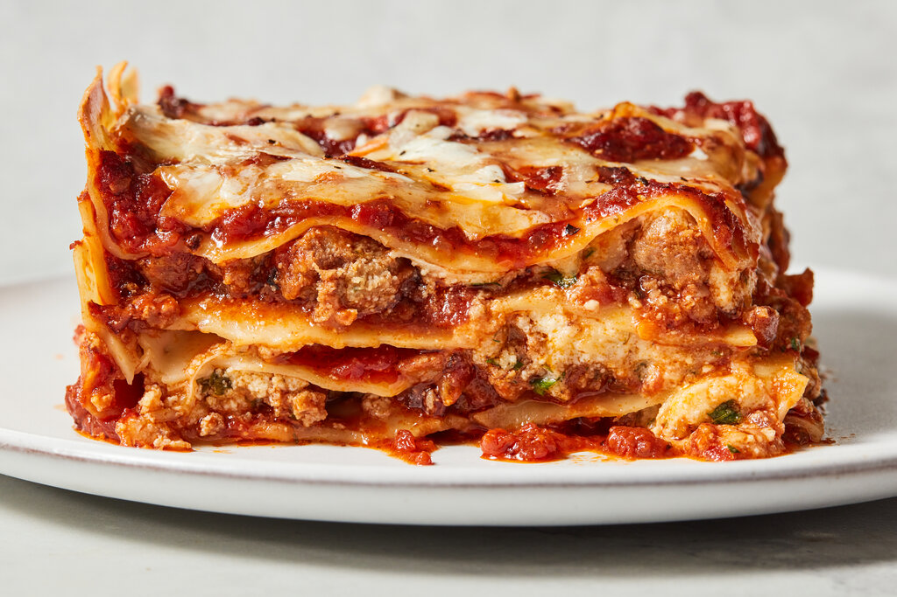

Lasagna
Home

Lasagna is a popular Italian baked dish made of wide, flat pasta sheets layered with savory meat or tomato sauce, creamy cheese, and rich white sauce.
- Italian sausage
- Pasta for lasagna
- Crushed tomatoes
- garlic
- Onion
- ricotta cheese
- mozzarella cheese
- Parmesan cheese
How to make the dish
- Preheat and Cook Meat: Heat your oven to 400°F (200°C). Cook the beef, onion, and garlic in a skillet until browned. Stir in most of the marinara sauce, saving a thin layer for the pan.
- Layer the Dish: Spread a thin layer of meat sauce on the bottom of a 9x13-inch baking dish. Add a layer of noodles, dollops of ricotta, meat sauce, and mozzarella. Repeat these layers until you run out of ingredients, finishing with noodles, a thin layer of sauce, and extra mozzarella on top.
- Bake: Cover the pan tightly with aluminum foil. Bake for 1 hour until the noodles are tender. Remove the foil and bake for 8 to 10 more minutes .until the cheese bubbles and turns golden brown
- Rest and Serve: Let the dish rest for 15 minutes before cutting. This keeps the layers intact.